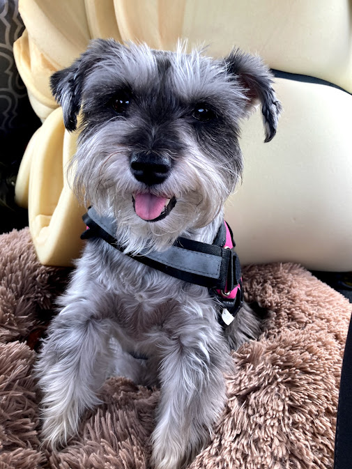

Mini Macey
Loves treats / bones / play time
Location: Saint Petersburg, FL
Profile Views: 10,993
Contact Macey
myDOG URL:
www.mydog.com/minimaceyMini Macey: General Info
- Member Since: 5/16/2022
- Dog Pals: Gerry the poodle, Wiggly the lab
- Top Brands: FreshPet, Taste of the Wild, Instict